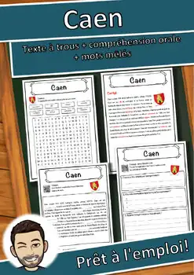
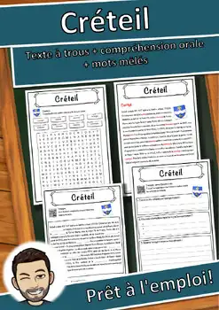
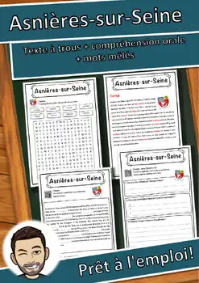
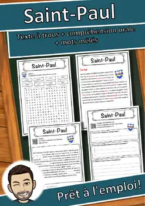
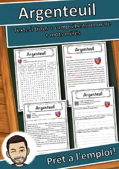
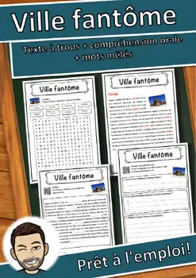
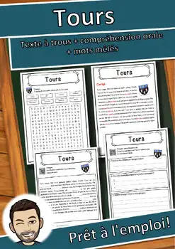
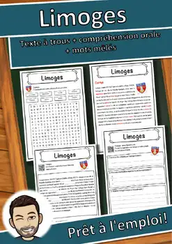

Caen – Fiche de géographie : texte à trous, compréhension orale et mots mêlés
Q&A
Thumbnail
1
Thumbnail
2
Thumbnail
3
Thumbnail
4
View Preview
Share
Description
Fiche documentaire sur la ville Caen : un texte informatif adapté aux élèves (environ 10-11 ans), texte à trous avec réserve de mots, compréhension orale avec enregistrement audio en français (QR code), mots mêlés et corrigé complet. Nombre d'habitants officiel avec date. Texte rédigé d'après fr.wikipedia.org/wiki/Caen (CC BY-SA), image : Wikimedia Commons (licence vérifiée). Format PDF, prêt à imprimer.
LIENS AVEC LES PROGRAMMES FRANÇAIS
- France – programmes de l’Éducation nationale (cycle 3), Français : « Lire » (comprendre un texte et contrôler sa compréhension) et « Comprendre et s’exprimer à l’oral » (écouter pour comprendre un texte lu) ; enrichir le lexique. Socle commun, domaine 1 « Les langages pour penser et communiquer ».
Niveau visé : CM2 et 6e ; convient aussi au FLE/FLS (CECR environ A2–B1).
LIENS AVEC LES PROGRAMMES CANADIENS
- Québec – PFEQ, Français langue d’enseignement (3e cycle du primaire) : compétence « Lire des textes variés » et « Communiquer oralement » (écoute active du texte audio) ; Progression des apprentissages : stratégies de compréhension, repérage d’informations, vocabulaire.
- Québec – Français langue seconde (programme de base et enrichi) : « Comprendre des textes lus et entendus » et « Interagir en français ».
- Ontario – French as a Second Language, Grades 1–8 (2013), immersion et français de base : attente C1 « Reading Comprehension » (comprendre des textes variés à l’aide de stratégies de lecture), A1 « Listening to Understand » (comprendre des textes oraux) et C3 « Intercultural Understanding ».
- Nouveau-Brunswick et autres provinces : convient aux programmes d’immersion française et de français langue seconde (lecture, écoute, vocabulaire) ; repères du CECR utilisés au Canada (environ A2–B1).
Niveau visé : 5e et 6e années (immersion française) ; aussi pour les écoles francophones selon le niveau de lecture.
Les textes et les images ont été créés avec l’aide de l’IA et vérifiés attentivement par un·e enseignant·e.
Ressources similaires

Créteil – Fiche de géographie : texte à trous, compréhension orale et mots mêlés

Asnières-sur-Seine – Fiche : texte à trous, compréhension orale et mots mêlés

Saint-Paul – Fiche : texte à trous, compréhension orale et mots mêlés
Grenoble – Fiche : texte à trous, compréhension orale et mots mêlés

Argenteuil – Fiche : texte à trous, compréhension orale et mots mêlés

Ville fantôme – Compréhension de lecture : texte à trous, écoute et mots mêlés

Tours – Fiche de géographie : texte à trous, compréhension orale et mots mêlés
